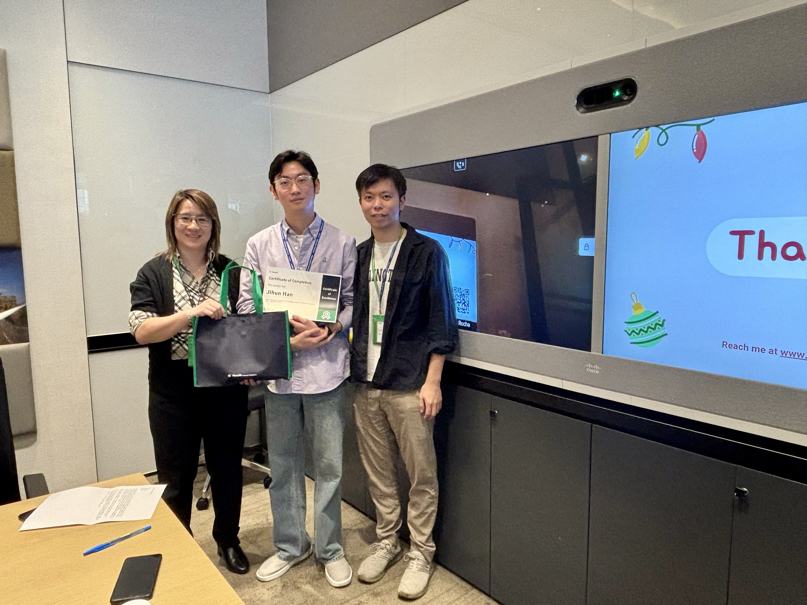
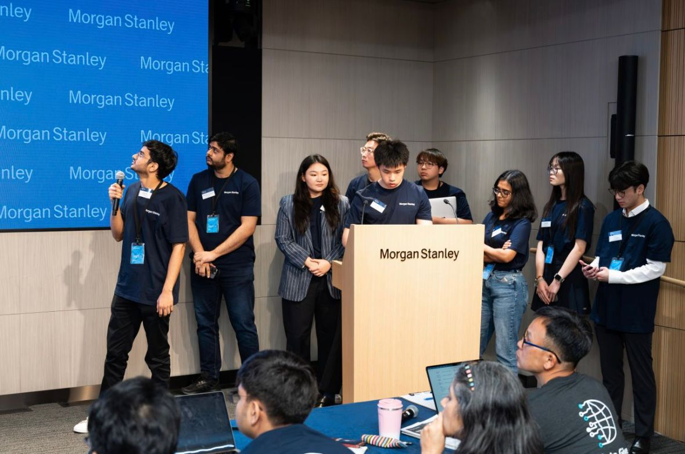
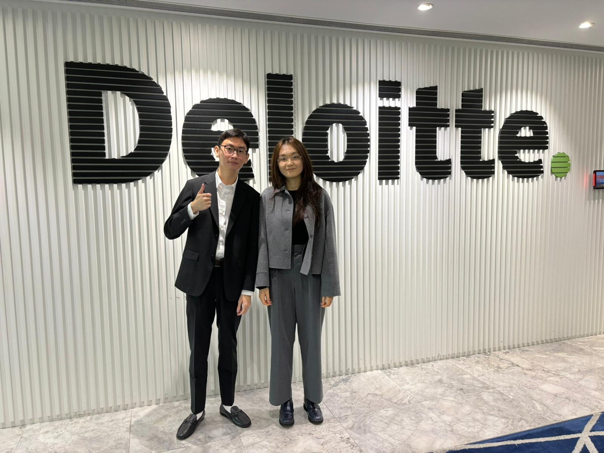
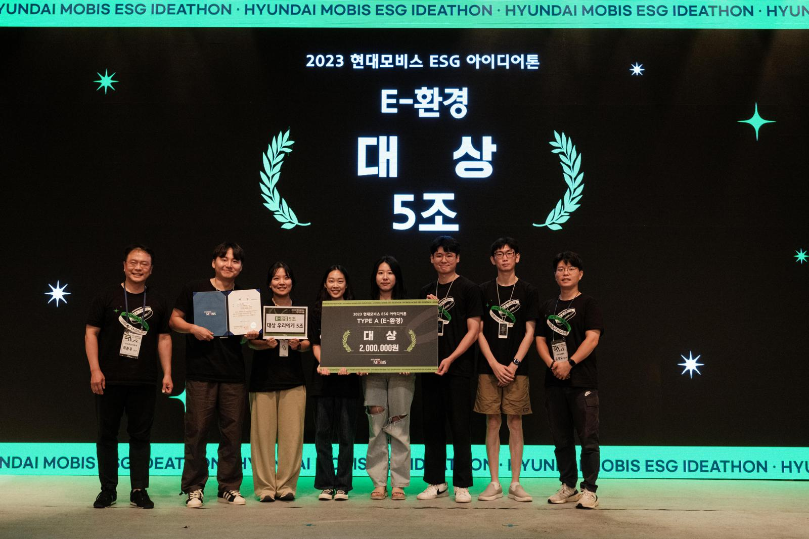

{% if page.header.overlay_color or page.header.overlay_image or
page.header.image %} {% include page__hero.html %} {% elsif page.header.video.id
and page.header.video.provider %} {% include page__hero_video.html %} {% endif
%} {% if page.url != "/" and site.breadcrumbs %} {% unless paginator %} {%
include breadcrumbs.html %} {% endunless %} {% endif %}

<div id="main" role="main">
  {% include sidebar.html %}
  <div class="archive">
    <div>
      <br />
      <h1 id="page-title" class="page__title" tabindex="-1" style="outline: none">
        {{ "hello, world!" | downcase }}
      </h1>
    </div>
    <section id="work" class="taxonomy_section">
      <h2 class="archive__subtitle">my work experience</h2>

      <div>
        <div style="margin-bottom: 30px"></div>
        <h5>AIA</h5>
        <p style="font-size: 14px; color: rgb(95, 95, 95)">
          IT Audit Intern | Apr 2025 - Present | Part-time<br />
        </p>
        <p class="archive__item-excerpt" itemprop="description">
          I am currently working as an IT Audit Intern at AIA Group Internal Audit Department.
        </p>
        <div style="margin-bottom: 30px"></div>
      </div>

      <div>
        <div style="margin-bottom: 30px"></div>
        <h5>Manulife Investment Management</h5>
        <p style="font-size: 14px; color: rgb(95, 95, 95)">
          Technology Placement Intern | Jun 2024 - Dec 2024 | Full-time<br />
        </p>
        <p class="archive__item-excerpt" itemprop="description">
          I completed my Technology Placement Intern at Manulife Investment Management as a full-stack developer in the
          Global Wealth and Asset Management Asia Technology Department. I engineered full-stack features for the
          Manulife Investment Management Wealth Registry System, streamlining operations for the internal Indonesia
          Operations Team, facilitating various fund services, and generating financial reports. Additionally, I
          spearheaded the implementation of unit and snapshot testing for each module, significantly enhancing code
          reliability and maintainability within the GWAM monorepo. I leveraged a web application programming tech stack
          that includes ReactJS, NestJS, GraphQL, and MS SQL Server, while employing agile methodologies with tools like
          Jira and Confluence.
        </p>
        
        <div style="margin-bottom: 30px"></div>
      </div>

      <a href="#page-title" class="back-to-top">Back to Top ↑</a>
    </section>

    <div style="margin-bottom: 30px"></div>

    <section id="achievement" class="taxonomy_section">
      <h2 class="archive__subtitle">my achievements</h2>

      <div>
        <div style="margin-bottom: 30px"></div>
        <h5>Morgan Stanley Asia Code To Give Hackathon</h5>
        <p style="font-size: 14px; color: rgb(95, 95, 95)">
          Participant | Aug 2024 - Aug 2024<br />
        </p>
        <p class="archive__item-excerpt" itemprop="description">
          I contributed to a hybrid hackathon focused on developing innovative solutions for non-profit organizations by
          collaborating with team members to implement an end-to-end application for managing events, participants, and
          volunteers. I delivered a successful project presentation at Morgan Stanley's office, receiving positive
          feedback that enhanced my software development, teamwork, and communication skills. Throughout this process, I
          utilized tech frameworks such as React, Django, PostgreSQL, Docker, and Git/GitHub for application
          development.
        </p>
        
        <div style="margin-bottom: 30px"></div>
      </div>

      <div>
        <div style="margin-bottom: 30px"></div>
        <h5>Deloitte CyberAce Competition</h5>
        <p style="font-size: 14px; color: rgb(95, 95, 95)">
          Finalist | Oct 2023 - Nov 2023<br />
        </p>
        <p class="archive__item-excerpt" itemprop="description">
          I participated the 2023 Deloitte CyberAce and was selected as a finalist. I pioneered the first-ever bid
          simulation with three teammates by writing a request for proposal (RFP), gaining immersive experience in the
          process of cybersecurity consulting business bidding. Additionally, I tackled real-life cybersecurity
          challenges presented by AWS AI and showcased our all-in-one solution, “DevOptima,” which assists enterprises
          in both innovation and cybersecurity improvements in the era of Generative AI.
        </p>
        
        <div style="margin-bottom: 30px"></div>
      </div>

      <div>
        <div style="margin-bottom: 30px"></div>
        <h5>Hyundai MOBIS ESG Ideathon</h5>
        <p style="font-size: 14px; color: rgb(95, 95, 95)">
          Grand Award Winner | Jul 2023 - Aug 2023<br />
        </p>
        <p class="archive__item-excerpt" itemprop="description">
          I designed a creative ESG project with a team of five members to reduce 108,520 tCO2eq of carbon emissions by
          recycling broken car parts to invent the “Smart LED Crosswalk,” achieving a 33% reduction in Hyundai Mobis's
          annual carbon emissions. I also demonstrated our real-world prototype of the “Smart LED Crosswalk” using
          Arduino and the C programming language, showcasing how both the hardware—comprising LEDs, sensors, and a power
          supply—and the software worked flawlessly.
        </p>
        
        <div style="margin-bottom: 30px"></div>
      </div>

      <a href="#page-title" class="back-to-top">Back to Top ↑</a>
    </section>
  </div>
</div>